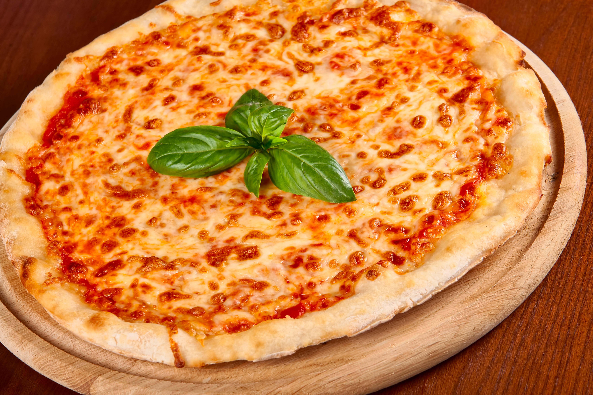

Moje ulubione dania z kuchni włoskiej
-

Spaghetti Carbonara
Potrawa złożona z makaronu, jajek, pancetty lub guanciale, sera pecorino romano lub parmezanu oraz czarnego pieprzu.
-

Spaghetti Bolognese
Sos mięsny pochodzący z włoskiej Bolonii. Używa się głównie wieprzowiny i wołowiny, Guanciale, zestawu warzyw, czyli cebuli, marchewki i selera naciowego, oliwy, pomidorów i czerwonego wina.
-

Risotto
Popularna potrawa północnej kuchni włoskiej, gotowana z dodatkiem bulionu do uzyskania kremowej konsystencji. Istnieje wiele przepisów gotowania risotta, wszystkie jednak oparte są na użyciu odpowiedniej odmiany ryżu, a procedura zwykle jest podobna, różnią się jedynie składniki w zależności od rodzaju dania czy regionu, z jakiego dane risotto pochodzi.
-

Pizza Margherita
Rodzaj pizzy w kuchni włoskiej, pochodzącej z Neapolu, pokrytej sosem pomidorowym, mozarellą, świeżą bazylią i oliwą z oliwek.
-

Tiramisu
Deser złożony z warstwy biszkoptu nasączonej bardzo mocną kawą espresso, na którą nakłada się warstwę kremu z sera mascarpone, żółtek jaj kurzych i cukru, a całość posypuje się warstwą grubo zmielonych płatków gorzkiej czekolady.
Trochę o kuchnii włoskiej
Kuchnia włoska charakteryzuje się korzystaniem z dużej ilości warzyw i przypraw takich jak oregano, bazylia, pieprz, estragon, tymianek, rozmaryn, a także używaniem parmezanu. W kuchni tej dość powszechnie stosuje się też oliwę, pomidory oraz cebulę i czosnek, a także oliwki. Kuchnia włoska wyspecjalizowała się szczególnie w potrawach mącznych oraz w rybnych i owocach morza. Charakterystyczną cechą kuchni włoskiej jest przygotowywanie dań świeżych ze składników dostępnych w okolicy, o danej porze roku. Włosi pod względem zasad kulinarnych są bardzo przywiązani do swojej tradycji. W kuchni włoskiej nie ma miejsca na ustępstwa pod względem jakości składników lub dodatków. Pewną tradycją jest także stała w całych Włoszech pora spożywania poszczególnych posiłków w ciągu dnia.
Kuchnia włoska jest bardzo różnorodna. Na północy je się ryż i polentę, częściej stosuje się masło, na południu przeważają niezliczone gatunki makaronów i oliwa. Każdy z 20 regionów oraz wiele miast mają swoje kulinarne specjały. Emilia-Romania to ojczyzna faszerowanych pierożków, Sycylia i Siena słyną z deserów, rejon Dolina Aosty z fondue, Florencja szczyci się befsztykiem i wieloma innymi daniami mięsnymi, Turyn kurczakami, Bolonia sosem mięsnym (bolognese), a Neapol - tradycyjną pizzą.
Wiele potraw takich jak spaghetti, pizza i risotto stało się bardzo popularne najpierw w USA, a potem razem z „eksportem” kultury amerykańskiej w większości państw przemysłowych, od Korei po Argentynę.
Tradycyjny posiłek włoski składa się z antipasto (przystawka), primo piatto (zazwyczaj pasta lub inne danie mączne, zupa); secondo piatto: główne danie to ryby, mięso albo drób wzbogacone sałatką. Taki posiłek zakończony jest deserem, np. panna cotta lub tiramisu.